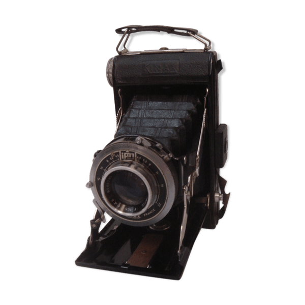

Video & Foto
Som mennesker bliver vi grebet af billeder konstant. Der er skabt mange metoder for, hvordan et billede kan manipulere det menneskelige øje, og forføre det til at kigge nærmere.
Der er dog én ting som griber os endnu mere end billeder - og det er flere billeder; på et sekund.
Video er noget vi nu alle har i vores hverdag - men at mestre kunsten til at kunne forføre seere med det, kræver knowhow.
Man kan bruge video til mange ting - bla. til at manipulere folks behov, som man typisk ville gøre i en reklamevideo. Derudover kan video, fortælle os en masse information - som kan være lærerigt. Sidst men ikke mindst kan video være underholdende - og det er i høj grad noget, vi mennesker nu til dage går meget op i.
Personligt elsker jeg video, og har et andet portefølje med alle mine videoproduktioner. Vi har dog som 1.semester MMD'er endnu ikke benyttet os meget af video værktøjerne - forneden kan ses det vi har lavet på uddannelsen.
Videoen var en vi fik til opgave at lave under vores 'Quick'n'Dirty'-forløb. Den er derfor lavet med begrænset tid og ressourcer. Med opgaven lærte vi at arbejde med fokus på processen frem for produktet. Dernæst lærte vi, at man selv på kort tid kan kreere noget, som kan formidle en fortælling.
Som 1. semester multimediedesignere skal vi kunne basal kamera føring - og dermed selvfølgelig vide, hvordan et kamera fungerer.
Der er mange typer kameraer på markedet - men vi benytter os af et digitalt spejlrefleks kamera. Spejlrefleks kameraer tager billedet ved hjælp af udefrakommende lys, som rammer sensorene, når vi trykker på knappen og åbner vores 'shutter'. Dette lys omdanner sig så til et billede, som vi kan få vist med det sammme. Her er der relevant at vide, at hvis vores shuttertid er langsom bliver vores billede lysere - og hvis vi tager et billede med langsom shutter, hvor motivet er i bevægelse, kan det blive slørret.
Det er relevant at vide, hvad en blænde er, da dette er afgørende for den dybde skarphed vi får i billedet. Blænden kontrollerer nemlig, hvormeget lys vi kan få ind igennem linsen. Desto mere lys, desto mindre dybeskarphed.
Valg af Objektiv er også meget vigtigt. Objektivet styrer vinklingen af lyset, som modtages af sensoren. Helt grundlæggende består et Objektiv af en række linser, som sidder en specifik afstand fra kamerasensoren. Man kan justere brændvidden med Objektivet - og dermed få en anden "vinkling" af lyset. Man kan eksempelvis have en "vidvinkel" eller "bredvinkel". Hvis der er stor afstand fra linserne i objektivt og til kamerasensoren kalder man det "tele".